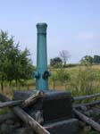
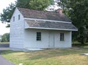
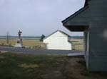
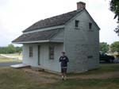
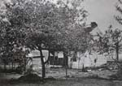
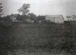

| page 2 of 2 |
| A Gettysburg Farms Tour with Becky Lyons 7/31/2001 |
UCLA at Gettysburg Journal |
| page 2 of 2 |
|  |
 |
 |
| Marker for the headquarters of Gen. Meade on the Leister farm. | In 1863 this was the farm of Abraham Brian. He was a free black man who owned his own property. When Confederates invaded Pennsylvania he left the area. During the fighting his farm was heavily damaged. | The Brian house and barn on Cemetery Ridge (near the Cyclorama building.) Monument to 107th PA infantry. Facing west. |
|  |
 |
 |
| Michael stands by the Brian house. | Southeast corner of Brian farmhouse following the battle. | Brian house and barn from the northwest, 1875-76. (House had been enlarged.) |